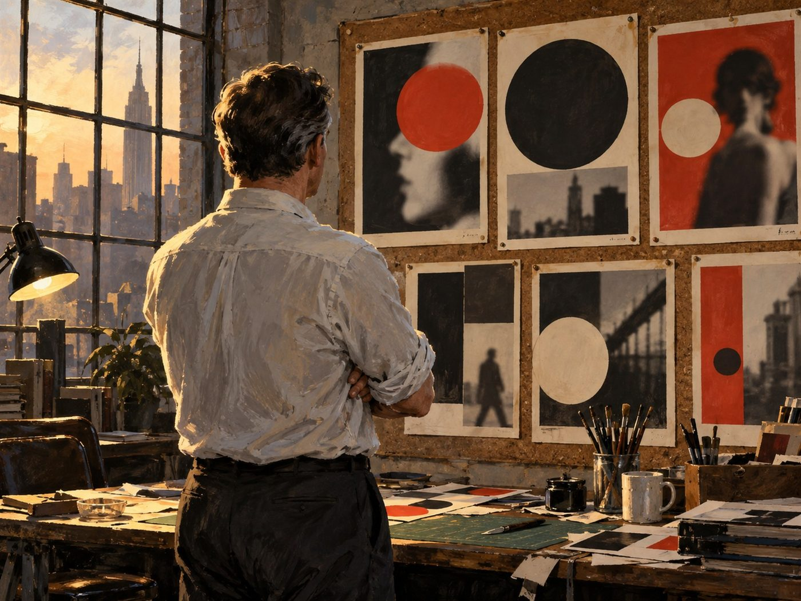

광고·마케팅 업계 뉴스 · 발행인 SM C&C 윤석진
표지 한 장으로 시대를 찌른 '빅 아이디어' 아트디렉터

독자 여러분, 오늘은 잡지 표지 한 장으로 미국을 들썩이게 한 아트디렉터 조지 로이스를 소개합니다. 1931년 뉴욕에서 태어난 그는 광고 아트디렉터로 일하며 1960년대 크리에이티브 혁명의 한복판에 섰습니다. 그를 전설로 만든 건 잡지 에스콰이어의 표지들입니다. 1968년, 병역 거부로 타이틀을 빼앗긴 무하마드 알리를 화살 맞은 성 세바스찬처럼 세운 표지는 지금도 대표적인 잡지 표지로 회자됩니다. 1980년대에는 'I Want My MTV' 캠페인으로 시청자가 직접 MTV를 달라고 외치게 만들었죠. 2012년에는 후배들에게 남기는 조언집 'Damn Good Advice'를 펴냈고, 2022년 91세로 세상을 떠났습니다. 그의 작업이 지금도 유효한 이유는 단순합니다. 한 장, 한 줄로 사람들이 말하고 싶게 만드는 것. 피드가 아무리 빨라져도 이 원칙은 그대로입니다.